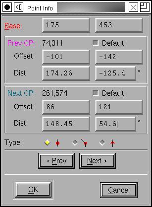
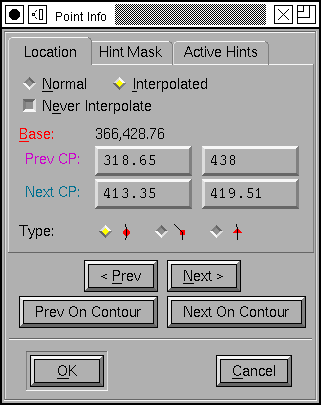
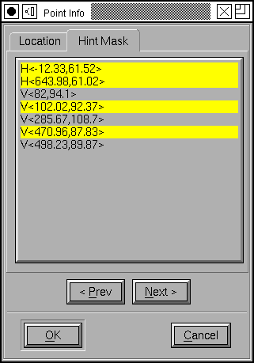
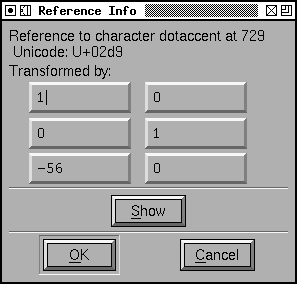

Get Info
In the Outline View the Get Info command can generate one of four different dialogs depending on what is selected. If a single thing is selected, and that thing is a point then the point info dialog is brought up, if it is a reference then the reference dialog is brought up, if it is a background image then the image dialog is brought up. If it is an anchor point then the anchor point dialog is brought up.
Point Info
 This shows information about the current point. The Base position is where the point itself is.
The Next CP shows both the location of the next control point, and the offset to that point from the base (and whether this setting is the default for that point, if this point is the last on an open contour then the [] Default button will be grey), underneath the offsets it shows the same information in a different format -- as a distance from the point itself, and the angle to it.
The Prev CP does the same for the previous control point.
You may change any of these and the change is reflected in the outline view. Your changes are constrained by the point type (for instance with tangent points, you may not change the angle fields as these are fixed).
FontForge also shows you the curvature of the two splines on either side of the point. In a perfect world these will be equal for curve points and the join will appear smooth. It also shows the difference between the two. The curvature is the reciprical of the radius of the circle tangent to the curve (a straight line has curvature 0 because it is a circle with infinite radius so its reciprical is 0). For most curves in letters this radius is fairly large when expressed in em-units (and its reciprical is correspondingly small). To make it easier to read, FontForge scales it by the em-size of the font -- this is equivalent to expressing it in units where 1 corresponds to an em (rather than 1000 or 2048).
You may also change whether a point is a curve, corner or tangent point (Caution: Changing from a corner point to a curve point and back to a corner point is NOT a no op. It may change the control points) You may move on to the next or previous point on the path, or the next/previous point of the current contour. If you cancel then all changes to all points are canceled.
The colors of the labels reflect the colors of the items they refer to. The point itself will be drawn in red, the previous control point will be drawn in magenta and the next control point will be drawn in dull cyan.
When editing truetype interpolated points it is more important to view the control points and let the base point continue to be interpolated. The <> Normal and <>Interpolated radio buttons control which view is active.
Pressing <> Interpolated may move the point to position it correctly
for interpolation.
Hint Mask
 If
you want to control what hints are active at a given point (and at all subsequent
points until an new hintmask is given) you can use the hint mask pane. This
provides you with a list of all hints in the current glyph, you should select
the ones which you want active.
If
you want to control what hints are active at a given point (and at all subsequent
points until an new hintmask is given) you can use the hint mask pane. This
provides you with a list of all hints in the current glyph, you should select
the ones which you want active.
As you select hints, the glyph view will darken those hints so you can see what you've selected.
Points with circles drawn around them have hintmasks.
According to Adobe's documentation you should never have two hints which conflict active at the same time. FontForge will warn you if you do this. Unfortunately there are fonts (even fonts from Adobe) which do not follow this rule, so I have made this a warning rather than an error.
Remember to hold the control key down when making disjoint selections.
Sadly the direction in which hintmasks apply is backwards from what you would expect (the hintmask applies to this point an all previous points on the contour, rather than all subsequent ones).
Active Hints
This looks just like the hint mask, except you cannot change anything it in. It shows you what hints are currently selected at this point. If a point has a hint mask then the two will be identical.
 Spiro
Point Info
Spiro
Point Info
If you are editing in spiro (clothoid) mode rather than Bezier mode, then there are no control points and the get info dialog is much simpler. Just the location of the point and the point type.
 Anchor
Points Info
Anchor
Points Info
This dialog shows the selected anchor point with the anchor class, location, type and (for ligatures) the ligature index. You may change any of these attributes (as long as your changes are reasonable). You may create new points or delete the current one. As with normal points above you may step through all the anchor points in your glyph.
In a truetype font you can force the anchor to track a contour point in the truetype glyph. This point can then be manipulated with truetype instructions to grid fit it properly with the current rasterization.
Anchor points may also be created with the
Point->Add Anchor command.
Reference Info
This dialog shows the name of the selected reference, its encoding in the font and its postscript transformation matrix. You may alter the transformation matrix if you desire.
The transformation matrix maps points in the glyph being refered to into
their location in the current glyph:
xcurrent = TM[1,1]*xref +
TM[2,1]*yref + TM[3,1]
ycurrent = TM[1,2]*yref +
TM[2,2]*yref + TM[3,2]
The Use My Metrics checkbox is useful in truetype fonts where it forces the metrics (width) of a composite glyph (for exampe acute a) is the same as the metrics of one of its components (for example a). This is especially important in fonts containing instructions that might modify a glyph's width.
The Round To Grid checkbox is also used in truetype hints and indicates that the translation should be rounded to the rasterizer's grid before being applied to the points of the reference. This means that the grid-fitting done by the reference's instructions will still be useful in the composite.
In a truetype font a reference may be positioned by matching two points, one in the base character, and one in the reference itself. In the example at right, the reference to "acute" will be moved until point 12 in "acute" is at the same place as point 33 in the base glyph. The glory of this method is that the truetype instructions assocated with the glyphs can move these points around to an appropriate location for the current pixelsize.
Points in a composite glyph are numbered by counting the points of the first component, adding 4 (for the 4 phantom (metric) points), then counting the points in the second composite, adding 4, etc. The first composite is the one which is drawn first, not the one which is added first. The Base numbering scheme is from the full composite, while the reference point is numbered by the current reference. The current reference must be drawn after the base point. You may use Element->Order to reorder the references.
(You should probably not set Round To Grid when doing point matching)
The bounding box information is informative only and displays the current location and size of the reference.
The [Show] button will open a glyph outline view showing the glyph being
referred to.
Image Info
This dialog gives the offset to the lower left corner of the image and the scale factors applied to the image. Currently you may not alter anything here, it is purely informational.
See Also: